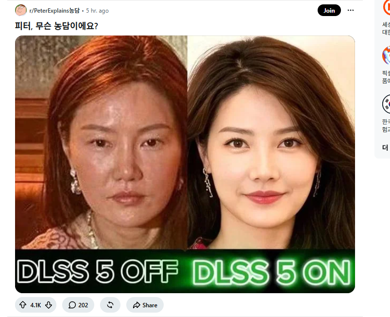

레딧 유머 퍼옴 (feat.젠슨황)
댓글
왼쪽도 이미 화장한 상태 아닐까..


동네 카페에서 보험 잘 팔거 같이 생겼네
이제 이혼소송까지 가면 엔비디아 주총에서 회장직 내려가라하는 거 아닌가 모르겠다
반대아님? DLSS키면 10살정도 먹던데
오른쪽은 한 30 초반 사진이고 왼쪽은 40대 후반사진인것같음 노화한번오면 저럴것같긴해
이렇게 정면삿 보니까 화장으로 커버될 수준이긴 하네
피부에 수천만원씩 쓰는 연예인도 아니고 일반인인데 저 정도면 선방한거지
모유명인이 저렇게 생긴 사람이 존나 잘 빨아준다고 했음
왼쪽이 화장하면 오른쪽 쌉가능일듯